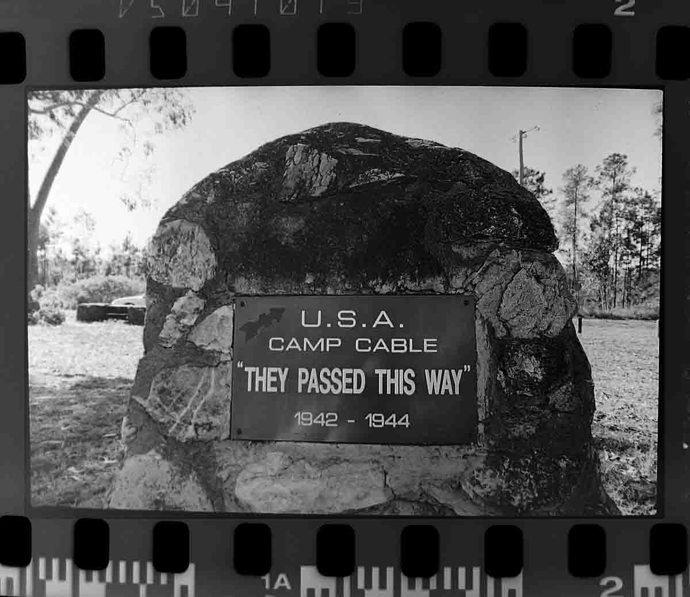

Notables from Camp Cable
Yarrabilba, Queensland, Australia
|
Notables from Camp Cable Yarrabilba, Queensland, Australia |
|
HomeMappingTopographyRemnant FeaturesEquipment, etcOrdnanceCoins
Leave a CommentView Comments
|
 Prior to development of the former WW2 training camp site for an urban habitat known as Yarrabilba, begun in 2011, an attempt was made to record some features and recover finds of note. Dense pine plantation and scrub growth on the site following abandonment for
military use made conventional approaches such as field walking, geophysical
survey, and excavation unfeasible. Instead, a walkabout evaluation was used to
capture some of the history of this site. |
Home© Bootstrap Heritage 2012 |